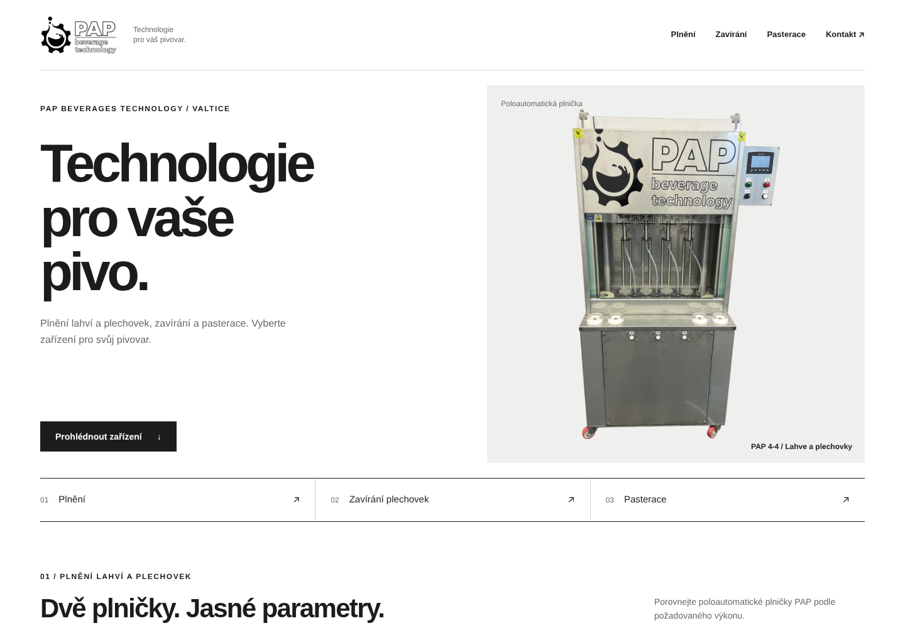
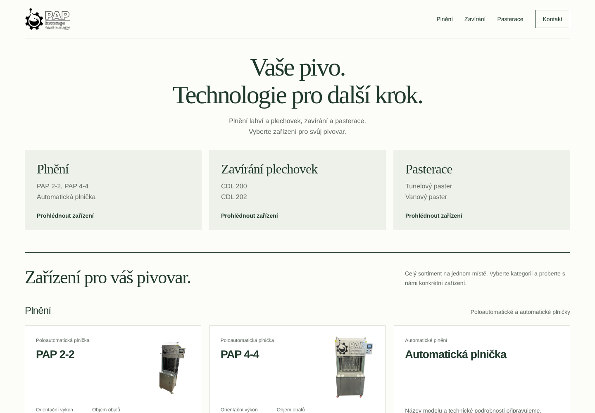
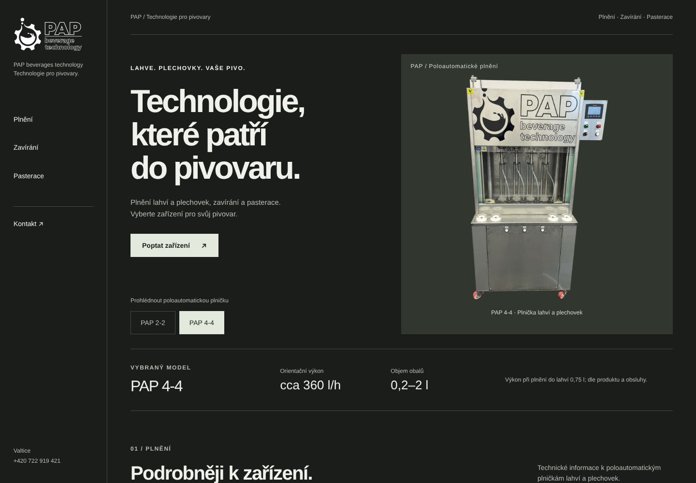

A
Technický katalog

Přesná černobílá sazba a jasná hierarchie. Vzhled vychází ze štítků strojů a technických katalogů.
Otevřete návrh a vyzkoušejte ho i na telefonu. Vyberte směr, který nejlépe odpovídá vaší firmě.

Přesná černobílá sazba a jasná hierarchie. Vzhled vychází ze štítků strojů a technických katalogů.

Světlé plochy a zelený detail. Tři rovnocenné kategorie vedou do přehledného katalogu všech sedmi zařízení.

Tmavé pozadí a velká fotografie stroje. Přepínač modelů mění fotografii i parametry vybrané plničky.
Skutečné podklady. Všechny návrhy používají dodané fotografie PAP 2-2 a PAP 4-4, logo z letáku a doložené parametry.
Zatím vizuální návrhy. U dalších pěti zařízení chybějí fotografie a parametry. Kontaktní odkazy otevřou telefon nebo e-mail.
Dále rozvíjíme návrh B. Návrhy A a C zůstávají pro srovnání. Jde o pracovní návrhy, nikoli finální web.